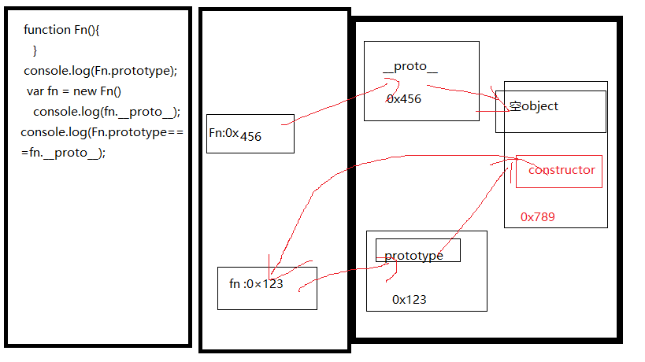

1.函数的prototyp
*每个函数都有一个prototype属性 它默认指向一个空的 object对象（原型对象）
*原型对象 中有一个属性constructor 它指向函数
2.给原型对象添加属性
*作用：函数的所有实例对象自动拥有原型中的属性
——————————————————————————————————————————————————————————————————————————————————————————————————————————————-
显式原型 & 隐式原型
1.每个函数function都有一个prototype，即显式原型（属性）
2.每个实例对象都有一个_proto_ ，称为隐式原型（属性）
3．对象的隐式原型的值为其对应构造函数的显式原型的值
5．总结:
*函数的prototype属性:在定义函数时自动添加的，默认值是一个空object对象
*对象的_proto_属性:创建对象时自动添加的，默认值为构造函数的prototype属性值
*程序员能直接操作显式原型，但不能直接操作隐式原型(ES6之前)

__________________________________________________________________________________
1.原型链